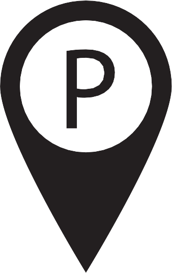

<html>
<head>
	<meta http-equiv="content-type" content="text/html; charset=utf-8">
	<link rel="stylesheet" href="../css/test.css" type="text/css" media="screen" charset="utf-8">
	<link rel="shortcut icon" href="http://cartodb.com/assets/favicon.ico" />
	<link rel="stylesheet" href="http://libs.cartodb.com/cartodb.js/v3/3.11/themes/css/cartodb.css" />
	<title>Test</title>
	<!--just for testing some functions:-->
	<!--    1. the full-scrolling map-->
	<!--    2. a half-transparent trabecula on top of the page.-->
	<!--    3. a text-box for google map search in the middle of the trabecula.-->
	<!--    4. after the search for the user's interest, the map will be reset. the center and zoom of the map will changed.-->
	<!--copyright by Joker777 <superyangyw@126.com>-->
	<!--2014-12-19 16:26-->
</head>
<body>
	<div class = "mapSearch" id = "topSearchTrabecular">
			<div class ="mapSearch" id = "topSearchBox">
					<div id="topSearchContainer" class = "mapSearch">
						
						<!---->
						<button id = "topLocateBtn">
								<i id = "findMe"></i>
						</button>
						<input id = "topSearchTextBox" class = "mapSearch searchContainer20141224" type="text" />
						<!--<input type="button" class = "mapSearch" id ="topSearchButton" />-->
						<button class = "mapSearch" id = "topSearchButton" src ="../resources/search.gif"></button>
					</div>
			</div>
	</div>
	<div id="map">
		
	<script src="http://libs.cartodb.com/cartodb.js/v3/3.11/cartodb.js"></script>
	<script type="text/javascript" charset="utf-8" src="../js/test.js">	</script>
</body>
</html>
